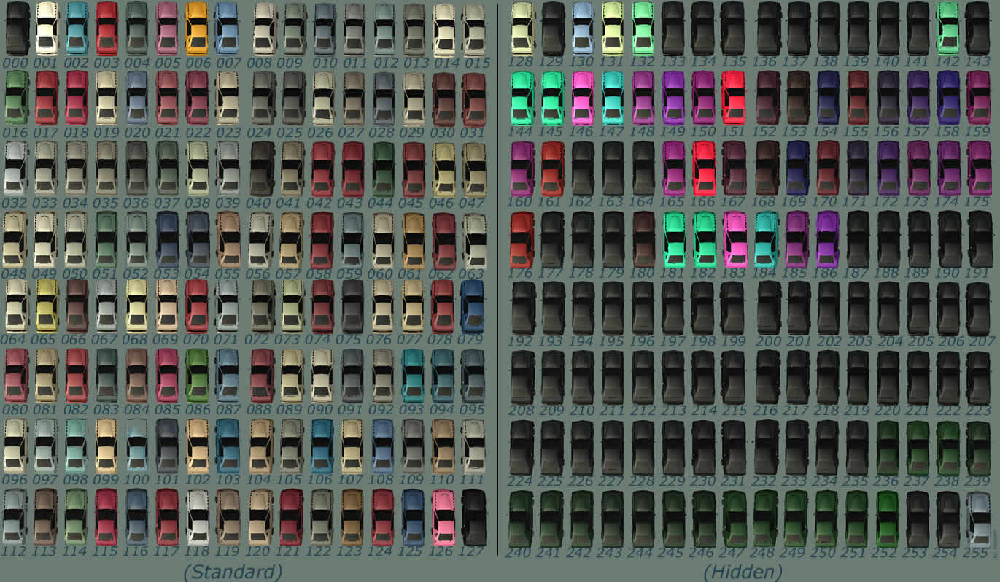
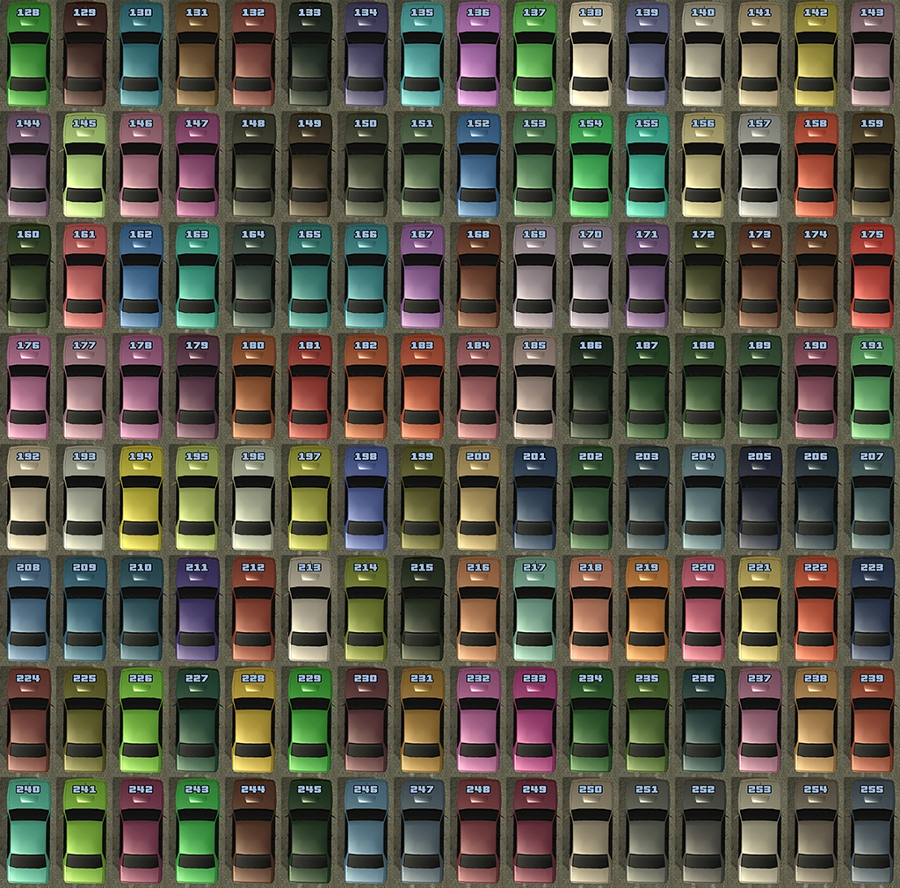

From SA-MP Wiki

Wichtiger
Hinweis
| Ab 0.3x ist das folgende Bild nicht mehr korrekt. Die Farben von 128 bis 255 wurden intern mit neuen Farben ersetzt. Sieh dir dazu das untere Bild an.
|


| Die nachfolgende Farbliste wurde erstmals in SA:MP 0.3x hinzugefügt und funktioniert nicht in älteren Versionen!
|

new VehicleColoursTableARGB[256] = {
// The existing colours from San Andreas
0xFF000000,0xFFF5F5F5,0xFFA1772A,0xFF100484,0xFF393726,0xFF6E4486,0xFF108ED7,0xFFB7754C,0xFFC6BEBD,0xFF72705E,
0xFF7A5946,0xFF796A65,0xFF8D7E5D,0xFF5A5958,0xFFD6DAD6,0xFFA3A19C,0xFF3F5F33,0xFF1A0E73,0xFF2A0A7B,0xFF949D9F,
0xFF784E3B,0xFF3E2E73,0xFF3B1E69,0xFF8C9196,0xFF595451,0xFF453E3F,0xFFA7A9A5,0xFF5A5C63,0xFF684A3D,0xFF929597,
0xFF211F42,0xFF2B275F,0xFFAB9484,0xFF7C7B76,0xFF646464,0xFF52575A,0xFF272525,0xFF353A2D,0xFF96A393,0xFF887A6D,
0xFF181922,0xFF5F676F,0xFF2A1C7C,0xFF150A5F,0xFF263819,0xFF201B5D,0xFF72989D,0xFF60757A,0xFF869598,0xFFB0B0AD,
0xFF888984,0xFF454F30,0xFF68624D,0xFF482216,0xFF4B2F27,0xFF56627D,0xFFABA49E,0xFF718D9C,0xFF22186D,0xFF81684E,
0xFF989C9C,0xFF477391,0xFF261C66,0xFF9F9D94,0xFFA5A7A4,0xFF468C8E,0xFF1E1A34,0xFF8C7A6A,0xFF8EADAA,0xFF8F98AB,
0xFF2E1F85,0xFF97826F,0xFF535858,0xFF90A79A,0xFF231A60,0xFF2C2020,0xFF96A0A4,0xFF849DAA,0xFF2B2278,0xFF6D310E,
0xFF3F2A72,0xFF5E717B,0xFF281D74,0xFF322E1E,0xFF2F324D,0xFF441B7C,0xFF205B2E,0xFF835A39,0xFF37286D,0xFF8FA2A7,
0xFFB1B1AF,0xFF554136,0xFF6E6C6D,0xFF896A0F,0xFF6B4B20,0xFF573E2B,0xFF9D9F9B,0xFF95846C,0xFF95844D,0xFF7F9BAE,
0xFF8F6C40,0xFF3B251F,0xFF7692AB,0xFF734513,0xFF6C8196,0xFF6A6864,0xFF825010,0xFF8399A1,0xFF945638,0xFF615652,
0xFF56697F,0xFF9A928C,0xFF876E59,0xFF323547,0xFF4F6244,0xFF270A73,0xFF573422,0xFF1B0D64,0xFFC6ADA3,0xFF535869,
0xFF808B9B,0xFF1C0B62,0xFF5E5D5B,0xFF284462,0xFF271873,0xFF6D371B,0xFFAE6AEC,0xFF000000,
// SA-MP erweiterte Farben (0.3x)
0xFF177517,0xFF060621,0xFF785412,0xFF0D2A45,0xFF1E1E57,0xFF010701,0xFF5A2225,0xFFAA892C,0xFFBD4D8A,0xFF3A9635, // 128-137
0xFFB7B7B7,0xFF8D4C46,0xFF8C8884,0xFF677881,0xFF267A81,0xFF6F506A,0xFF6F3E58,0xFF72B98C,0xFF784F82,0xFF6A276D, // 138-147
0xFF131D1E,0xFF06131E,0xFF18251F,0xFF31452C,0xFF994C1E,0xFF435F2E,0xFF48991E,0xFF99991E,0xFF769999,0xFF99847C, // 148-157
0xFF1E2E99,0xFF081E2C,0xFF072414,0xFF4D3E99,0xFF994C1E,0xFF818119,0xFF2A291A,0xFF6F6116,0xFF87661B,0xFF993F6C, // 158-167
0xFF0E1A48,0xFF99737A,0xFF996D74,0xFF7E3853,0xFF072422,0xFF0C193E,0xFF0E2146,0xFF1E1E99,0xFF8D4C8D,0xFF805B80, // 168-177
0xFF7E3E7B,0xFF37173C,0xFF173573,0xFF181878,0xFF1A3483,0xFF1C2F8E,0xFF533E7E,0xFF7C6D7C,0xFF020C02,0xFF072407, // 178-187
0xFF123016,0xFF1B3016,0xFF4F2B64,0xFF528436,0xFF909599,0xFF968D81,0xFF1E9999,0xFF4C997F,0xFF929283,0xFF228278, // 188-197
0xFF993C2B,0xFF0B3A3A,0xFF4E798A,0xFF491F0E,0xFF1C3715,0xFF3A2715,0xFF755737,0xFF200806,0xFF261307,0xFF4B3920, // 198-207
0xFF89502C,0xFF6C4215,0xFF503210,0xFF631624,0xFF152069,0xFF948D8C,0xFF136051,0xFF020F09,0xFF3A578C,0xFF8E8852, // 208-217
0xFF525C99,0xFF1E5899,0xFF633A99,0xFF4E8F99,0xFF1E3199,0xFF42180D,0xFF1E1E52,0xFF0D4242,0xFF1E994C,0xFF1D2A08, // 218-227
0xFF1D8296,0xFF197F19,0xFF1F143B,0xFF175274,0xFF8D3F89,0xFF6C1A7E,0xFF0B370B,0xFF0D4527,0xFF241F07,0xFF734578, // 228-237
0xFF3A658A,0xFF172673,0xFF909431,0xFF1D9456,0xFF3D1659,0xFF2F8A1B,0xFF0B1638,0xFF041804,0xFF8E5D35,0xFF5B3F2E, // 238-247
0xFF281A56,0xFF270E4E,0xFF676C70,0xFF423E3B,0xFF332D2E,0xFF7D7E7B,0xFF42444A,0xFF4E3428
};

{kind=link}
{kind=link}